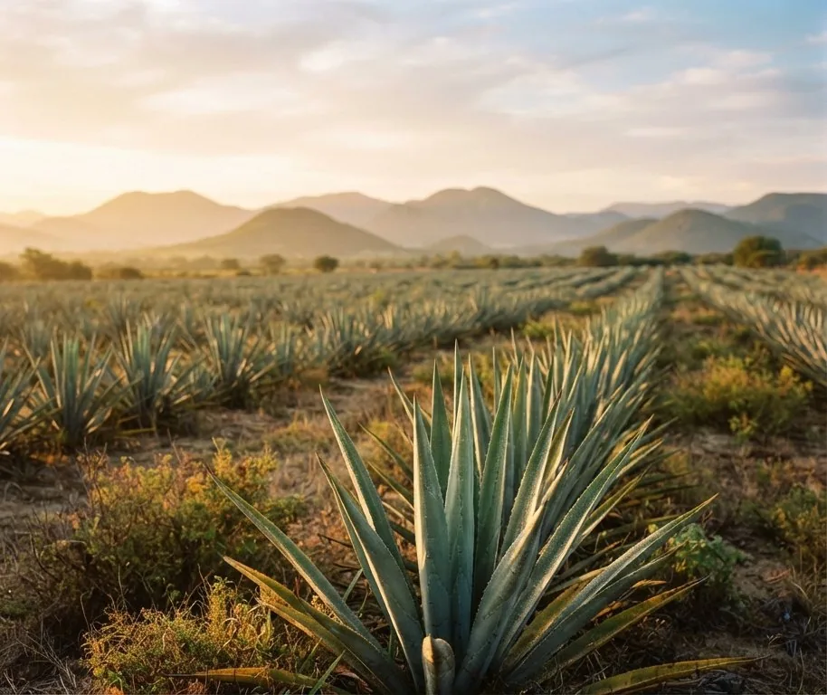

Del semidesierto queretano a una barra de Ginzaケレタロの半砂漠から、銀座のバーへ
Cómo una botella hecha a mano cruza el Pacífico sin escalas.手づくりのボトルが、太平洋を直行で渡るまで。
Leer más続きを読む
Todo empieza en el campo: el agave tarda años en madurar antes de cocerse y destilarse a mano, en lotes pequeños. Cada lote de NÄNÄ es de 2,000 botellas.
Desde México, la botella viaja por mar directo a Japón, sin transbordo en Estados Unidos: de 15 a 23 días. Allí la recibe un importador con licencia, que la lleva a bares, izakayas y tiendas de Ginza, Roppongi, Shibuya y Shinjuku.
アガベは何年もかけて育ち、小さなロットで手によって蒸され、蒸留されます。NÄNÄのロットは2,000本です。
メキシコから海路で日本へ直行し、アメリカは経由しません。所要は15〜23日。免許を持つ輸入者が受け取り、銀座・六本木・渋谷・新宿のバーや居酒屋、専門店へ届けます。